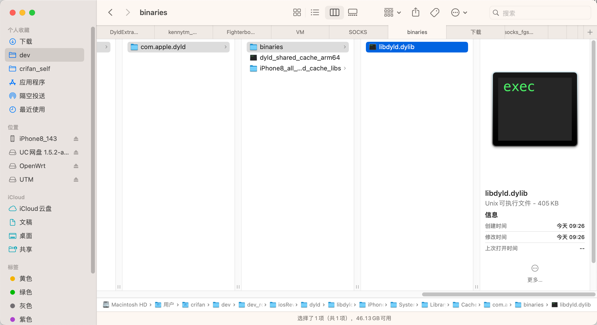

导出单个库
举例：libdyld.dylib
- 用法举例
dyldex -e libdyld.dylib ./dyld_shared_cache_arm64 - 输出
➜ com.apple.dyld dyldex -e libdyld.dylib ./dyld_shared_cache_arm64 Extracting /usr/lib/system/libdyld.dylib Extractor >> Done :: [/] - 导出的文件：
/usr/lib/system/libdyld.dylib- 大小：
396KB= Mac中占用空间：405KB- 
- 大小：